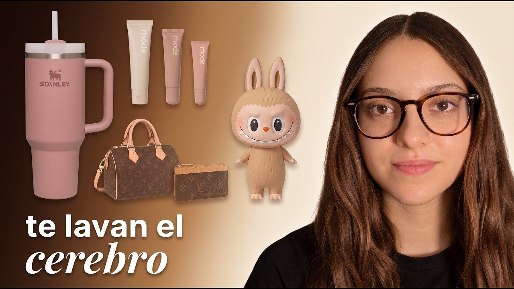

Marcas
Colaboraciones, patrocinios y contenido para una audiencia que busca ambición, negocios y las historias detrás del éxito.
Proponer una colaboraciónHola, soy Claudia @klauvara
Estrategia de YouTube, guion y vídeo para marcas, creadores y equipos. Todo lo que sé lo he aprendido creando canales desde cero y midiendo qué funciona.

+400K visualizacionesen un solo vídeo de @klauvaraColaboraciones, patrocinios y contenido para una audiencia que busca ambición, negocios y las historias detrás del éxito.
Proponer una colaboración¿Quieres crecer tu canal de YouTube? Estoy preparando una forma de ayudarte con ideas, títulos, miniaturas y retención. Escríbeme y te aviso la primera.
Apuntarme a la listaBusco oportunidades en YouTube, vídeo largo y estrategia de contenido. Barcelona, presencial, híbrido o remoto.
Ver mi LinkedInEmpecé a crear contenido muy joven, mucho antes de saber que quería dedicarme al marketing. Lo que empezó como curiosidad se convirtió en mi forma de aprender: crear, publicar, analizar qué funcionaba y volver a intentarlo.
“no tengo todas las respuestas, las estoy buscando.”
Redes sociales como laboratorio. Crear, publicar, mirar los datos, repetir.
Mientras estudio, llevo todo lo que aprendo a proyectos propios en YouTube, TikTok e Instagram.
Un canal creado desde cero y monetizado en 7 días: +25K suscriptores y +4M de visualizaciones.
Mi proyecto personal. Documento lo que construyo y experimento con ideas nuevas en público.
Prácticas en una agencia de marketing digital, creando contenido para marcas, y especializándome en YouTube y vídeo largo.
Vídeos sobre marcas, educación, internet y lo que voy construyendo. Los hago yo de principio a fin: idea, guion, grabación, edición y miniatura.
PD: haz cosas difíciles.
Propuestas comerciales, patrocinios y proyectos de contenido.
klauvara.contacto@gmail.comBusco oportunidades en YouTube, vídeo largo y estrategia de contenido. Barcelona, presencial, híbrido o remoto.
Ver mi LinkedInDonde cuento el proceso, no solo los resultados.